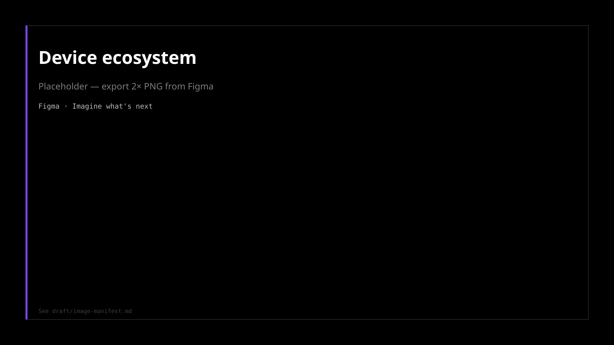
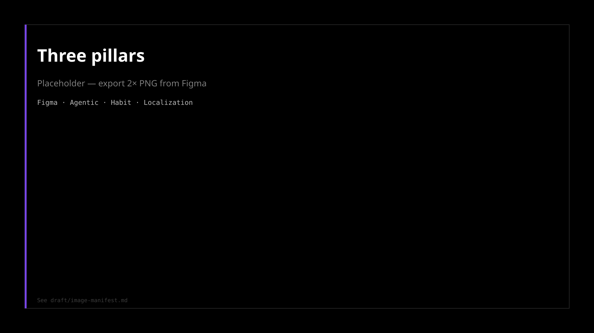
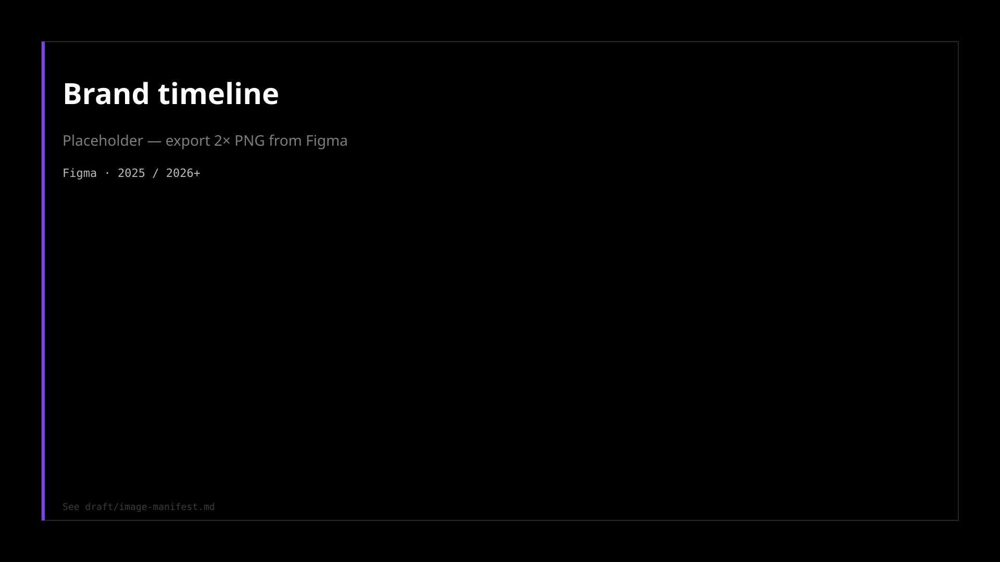

Firefox: AI-native browser + Nova
Overview
Two bets, one standard
Nova remakes the window — desktop and mobile NTP in Nightly. Smart Window is opt-in agentic AI beside the page, not a chatbot stapled to chrome. Same token discipline across surfaces.


Nova desktop NTP, Nova mobile, and Smart Window agentic panel — one product, two bets, shared craft standard.
Positioning
Firefox's 2026 bet is two parallel acts in one product: Nova remakes the window; Smart Window makes AI opt-in, private, and worth switching for on Mozilla's terms, not a chatbot stapled to chrome.
Stakes
Browsers look the same. Every competitor is bolting on AI. The risk isn't being late. It's shipping intelligence that violates trust, or a redesign that ignores why people switch.
Firefox is the user-centered browser for protection without compromise, control without complexity, and real choice. We're designing for people who need a reason to switch.

Two bets, one standard
| Bet | Timeline | What it delivers |
|---|---|---|
| Nova | 2026+ | Company-priority redesign: chrome, NTP, onboarding. Youthful, fresh, delight. In Nightly, in public. |
| Smart Window | 2025 → 2026 | Opt-in AI browsing: Private, Classic, and AI Mode in one product. Agentic when you want it. |
Smart Window inherits Nova tokens from day one. Chrome decisions apply across Classic, Smart, and Private window types.
Three modes (AI on Mozilla's terms)
| Mode | Frame |
|---|---|
| Private | On-device, maximum privacy |
| Classic | Familiar Firefox; light intelligence you can ignore |
| Smart Window | Opt-in assistant. The browser carries more of the task, with consent |
Browse faster. Privately. On your terms.

Private on-device. Classic when you want familiar Firefox. Smart Window when you want the browser to carry the task — with consent.
UX Vision Statement
Create transformational, user-centric browsing experiences that put people in control of their online lives. By reimagining the window to the web, we are attracting new users, inspiring those we have, and building a healthier internet for all.
- 2025: Personalized, private, and always there when you need it.
- 2026+: Youthful, fresh, and built around authentic moments of delight.
Three experience pillars
| Pillar | Mobile signal | Desktop / Nova |
|---|---|---|
| Agentic | AI answer, follow-up threads, in-window tasks | Smart Window thinking states, history resume, mode transitions |
| Habit Loops | Shortcuts, Discover, bookmark collections | NTP widgets, tab groups, vertical tabs |
| Localization | Sync onboarding, regional first-run | Locale-aware Nova chrome; global community feedback |
Blue sky ideas. Thought experiments. Bigger than incremental.


Trade-offs
- AI opt-in, not AI default. Classic stays Firefox.
- Nova ships chrome before every AI surface is eng-ready. Product Review gates, not prototype theater.
- Motion cut where it didn't earn its place. Reload/stop animation removed; bookmark deferred post-Nova.
- Question borrowed patterns. Smart Window at 100% font-size tokenized. Greenfield discipline.
Proof
- Nova in Nightly. Public Reddit, Connect, community impact tracker
- NTP token propagation: 28% → 77.5%
- Smart Window: 100% font-size tokenized (AWDTY)
- 13+ cross-team decisions logged with trade-offs
- AI velocity operating model: builder enablement at scale, proof bars
30-second pitch
Firefox's 2026 story is two bets in one product. Nova remakes the window. It's in Nightly, with public trade-offs documented. Smart Window is AI on Mozilla's terms: opt-in, private when you need it, agentic when you want the browser to carry the task. Same token discipline. Same proof bar. Same operating system — enabling AI-native builders at scale.
Deep dives
Interview send-aheads and craft detail. Start with the unified story above, then drill in:
- Project Nova: chrome trade-offs, Reddit/Connect community, decision registry rows
- Smart Window: three modes, motion, thinking states, token discipline
- Design operating model: AI-native velocity, code-first prototypes, proof bars